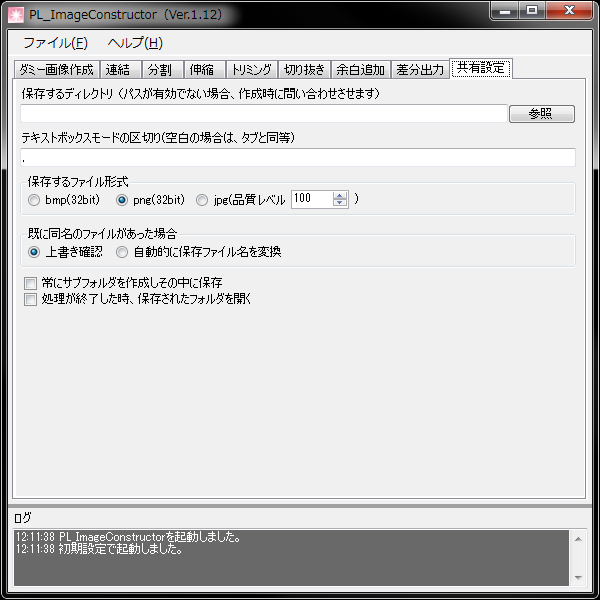

保存場所や保存形式などの設定を行ないます。
この場の設定は、ダミー画像作成、一括連結等、各ツールで使用されます。
- 保存するディレクトリ
保存する場所を指定します。
そのディレクトリが存在しない等の場合は、毎回保存場所を指定するダイアログが表示されます。
保存場所指定のダイアログが出たほうが便利な事もありますので、無理に設定する事はありません。
- 既に同名のファイルがあった場合
保存しようとした際に既に同名のファイルがあった場合の処理を指定します。
- 上書き確認
確認ダイアログを表示し、「はい」が押された場合上書きを行ないます。
「いいえ」が押された場合は、そのファイルの出力を行ないません。
- 自動的に保存ファイル名を変換
自動的にファイルの後に"_半角数字"を追加して出力します。